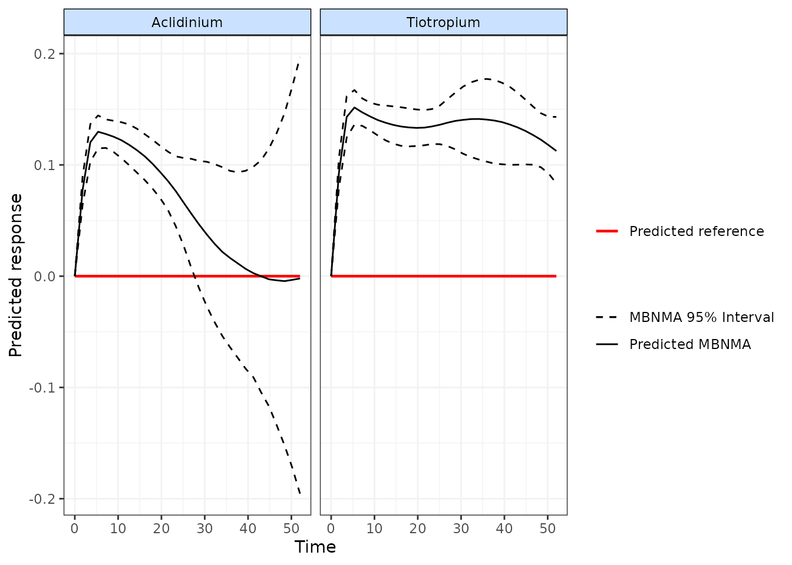

Perform a time-course Model-Based Network Meta-Analysis (MBNMA)
Hugo Pedder
2025-01-21
runmbnmatime-2.RmdAnalysis using mb.run()
MBNMA models are fitted using mb.run() and they model
treatment effects over time (e.g. days, weeks, months). This can just as
easily be performed on datasets with many different treatments (network
meta-analysis) as it can on datasets comparing only two treatments
(pairwise meta-analysis) - the syntax is the same.
An object or class("mb.network") must be provided as the
data for mb.run(). The key arguments within
mb.run() involve specifying the functional form used to
model the time-course, and the time-course parameters that comprise that
functional form.
Time-course functions
A number of different time-course functions can be fitted within
MBNMAtime and the specific forms of the time-course
parameters are defined by arguments within these functions, and this
allows for a wide variety of parameterizations and time-course
shapes.
For further details check the help files for each function
(e.g. ?tloglin()). These functions, are then used as inputs
for the fun argument in mb.run().
-
tloglin()- Log-linear function -
titp()- Integrated Two-Component Prediction (ITP) function -
temax()- Emax function -
tpoly()- Polynomial function (e.g. linear, quadratic) -
tfpoly()- Fractional polynomial function, as proposed previously for time-course NMA by Jansen (2015). -
tspline()- Spline functions (includes B-splines, restricted cubic splines, natural splines and piecewise linear splines) -
tuser()- A time-course function that can be explicitly defined by the user
Time-course parameters within time-course functions are each defined by two arguments:
pool is used to define the approach used for the pooling
of a given time-course parameter and can either of:
-
"rel"indicates that relative effects (or mean differences) should be pooled for this time-course parameter. This preserves randomisation within included studies, are likely to vary less between studies (only due to effect modification), and allow for testing of consistency between direct and indirect evidence. Pooling follows the general approach for Network Meta-Analysis proposed by Lu and Ades (2004). -
"abs"indicates that study arms should be pooled across the whole network for this time-course parameter independently of assigned treatment. This implies using a single absolute value across the network for this time-course parameter, and may therefore be making strong assumptions of similarity between studies.
method is used to define the model used for
meta-analysis for a given time-course parameter and can take either
of:
-
"common"implies that all studies estimate the same true effect (sometimes called a “fixed effect” meta-analysis) -
"random"implies that all studies estimate a separate true effect, but that each of these true effects vary randomly around a true mean effect. This approach allows for modelling of between-study heterogeneity.
Specifying pooling relative effects on all time-course parameters would imply performing a contrast-based synthesis, whereas specifying pooling absolute effects on all of them would imply performing an arm-based synthesis. There has been substantial discussion in the literature regarding the strengths and limitations of both these approaches (Dias and Ades 2016; Hong et al. 2016; Karahalios et al. 2017).
Additional arguments within the function may also be used to specify the degree (e.g. for polynomials) or the number of knots or knot placement for splines.
Splines and knots
For a more flexible time-course shape, various different splines can
be fitted to the data by using tspline(). This model is
very flexible and can allow for a variety of non-monotonic time-course
relationships, though parameters can be difficult to interpret and the
resulting time-course shape is often best visualised by calculating and
plotting predictions Prediction.
To fit this model, the number/location of knots (the points at which
the different spline pieces meet) should be specified. These can be
specified either as a number of equally spaced knots, using
nknots, or by specifying the specific knot locations on the
time scale in the dataset, using knots. Note that by
default, a boundary knot will be placed at the maximum of the range of
time-points to limit the function extrapolating to extreme values.
Choosing a time-course function
Choice of time-course function involves a combination of data-driven,
statistical information (plots, model fit statistics) and
clinical/biological plausibility. timeplot() and
binplot() functions can be used to observe the how the data
differs at different time-points. This can help to understand, for
example, whether the data monotonically increases or decreases, or
whether there is a turning point or multiple turning-points within the
time-course, and at which follow-up time(s) this might occur. This can
also be guided by a clinical/biological knowledge/expectation of the
shape of the time-course outside of the range of time-points for which
data are available.
However, once several potential candidate time-course functions have been identified, selection between them (and of the specific specification of the time-course parameters in terms of absolute or relative effects) is best achieved using model fit statistics (e.g. Deviance Information Criterion (DIC), residual deviance).
Output
mb.run() returns an object of
class(c("mbnma", "rjags")). summary() provides
summary estimates of posterior densities for different parameters in the
model, with some explanation regarding the way in which the model has
been defined. Estimates are automatically reported for parameters of
interest depending on the model specification (unless otherwise
specified in parameters.to.save). Nodes that are
automatically monitored (if present in the model) have the following
interpretation:
Parameters modelled using relative effects
If pooling is relative (e.g. pool.1="rel") for a given
parameter then the named parameter (e.g. emax) or a
numbered d parameter (e.g. d.1) corresponds to
the pooled relative effect (or mean difference) for a given treatment
compared to the network reference treatment for this time-course
parameter.
sd. followed by a named (e.g. emax,
beta.1) is the between-study SD (heterogeneity) for
relative effects, reported if pooling for a time-course parameter is
relative (e.g. pool.1="rel") and the method for
synthesis is random (e.g. method.1="random).
If class effects are modelled, parameters for classes are represented
by the upper case name of the time-course parameter they correspond to.
For example if class.effect=list(emax="random"), relative
class effects will be represented by EMAX. The SD of the
class effect (e.g. sd.EMAX, sd.BETA.1) is the
SD of treatments within a class for the time-course parameter they
correspond to.
Parameters modelled using absolute effects
If pooling is absolute (e.g. pool.1="abs") for a given
parameter then the named parameter (e.g. emax) or a
numbered beta parameter (e.g. beta.1)
corresponds to the estimated absolute effect for this time-course
parameter.
For an absolute time-course parameter if the corresponding method is
common (e.g. method.1="common") the parameter corresponds
to a single common parameter estimated across all studies and
treatments. If the corresponding method is random
(e.g. method.1="random") then parameter is a mean effect
around which the study-level absolute effects vary with SD corresponding
to sd. followed by the named parameter
(e.g. sd.emax, sd.beta.1).
Other model parameters
rho is the correlation coefficient for correlation
between time-points. Its interpretation will differ depending on the
covariance structure specified in covar.
totresdev is residual deviance of the model and
deviance is the deviance of the model. Model fit statistics
for pD (effective number of parameters) and
DIC (Deviance Information Criterion) are also reported,
with an explanation as to how they have been calculated.
Examples
An example MBNMA of the alogliptin dataset using a linear time-course function and common treatment effects that pool relative effects and assumes consistency between direct and indirect evidence can be performed as follows:
# Prepare data using the alogliptin dataset
network.alog <- mb.network(alog_pcfb, reference = "placebo")
#> Studies reporting change from baseline automatically identified from the data
# Run a linear time-course MBNMA
mbnma <- mb.run(network.alog, fun=tpoly(degree=1, pool.1="rel", method.1="common"))
#> module glm loaded
summary(mbnma)
#> ========================================
#> Time-course MBNMA
#> ========================================
#>
#> Time-course function: poly (degree = 1)
#> Data modelled without intercept (change from baseline data assumed)
#>
#> beta.1 parameter
#> Pooling: relative effects
#> Method: common treatment effects
#>
#> |Treatment |Parameter | Median| 2.5%| 97.5%|
#> |:---------|:---------|-------:|-------:|-------:|
#> |placebo |d.1[1] | 0.0000| 0.0000| 0.0000|
#> |alog_6.25 |d.1[2] | -0.0347| -0.0375| -0.0318|
#> |alog_12.5 |d.1[3] | -0.0422| -0.0440| -0.0404|
#> |alog_25 |d.1[4] | -0.0449| -0.0466| -0.0431|
#> |alog_50 |d.1[5] | -0.0511| -0.0540| -0.0484|
#> |alog_100 |d.1[6] | -0.0484| -0.0659| -0.0296|
#>
#>
#>
#> Correlation between time points
#> Covariance structure: varadj
#> Rho assigned a numeric value: 0
#>
#> #### Model Fit Statistics ####
#>
#> Effective number of parameters:
#> pD calculated using the Kullback-Leibler divergence = 19
#> Deviance = 4502
#> Residual deviance = 5449
#> Deviance Information Criterion (DIC) = 4521For this model, the d.1 parameters correspond to the 1st
polynomial coefficient, and therefore are the linear gradient of the
response over time for each treatment versus placebo -
i.e. the mean difference for the change in efficacy for each treatment
versus placebo. However, note that the residual deviance of
the model is very high, suggesting (as we might expect) that this linear
time-course function is a poor fit.
We may want to fit a more complex time-course function with two
time-course parameters, such as an Emax function, yet limitations in the
data might require that we make an assumption that one of the parameters
does not vary by treatment. We can specify this by setting
pool to be equal to "abs" for any parameters
we choose.
# Run an Emax time-course MBNMA with two parameters
mbnma <- mb.run(network.alog, fun=temax(
pool.emax = "rel", method.emax="common",
pool.et50 = "abs", method.et50="common"
))
#> 'et50' parameters must take positive values.
#> Default half-normal prior restricts posterior to positive values.
summary(mbnma)
#> ========================================
#> Time-course MBNMA
#> ========================================
#>
#> Time-course function: emax
#> Data modelled without intercept (change from baseline data assumed)
#>
#> emax parameter
#> Pooling: relative effects
#> Method: common treatment effects
#>
#> |Treatment |Parameter | Median| 2.5%| 97.5%|
#> |:---------|:---------|-------:|-------:|-------:|
#> |placebo |emax[1] | 0.0000| 0.0000| 0.0000|
#> |alog_6.25 |emax[2] | -0.5870| -0.6550| -0.5227|
#> |alog_12.5 |emax[3] | -0.7766| -0.8193| -0.7366|
#> |alog_25 |emax[4] | -0.8457| -0.8878| -0.8055|
#> |alog_50 |emax[5] | -0.9673| -1.0371| -0.9008|
#> |alog_100 |emax[6] | -0.8285| -1.1049| -0.5686|
#>
#>
#> et50 parameter
#> Pooling: absolute effects
#> Method: common treatment effects
#>
#> |Treatment |Parameter | Median| 2.5%| 97.5%|
#> |:---------|:---------|------:|-----:|------:|
#> |placebo |et50 | 5.1969| 4.811| 5.6241|
#> |alog_6.25 |et50 | 5.1969| 4.811| 5.6241|
#> |alog_12.5 |et50 | 5.1969| 4.811| 5.6241|
#> |alog_25 |et50 | 5.1969| 4.811| 5.6241|
#> |alog_50 |et50 | 5.1969| 4.811| 5.6241|
#> |alog_100 |et50 | 5.1969| 4.811| 5.6241|
#>
#>
#>
#> Correlation between time points
#> Covariance structure: varadj
#> Rho assigned a numeric value: 0
#>
#> #### Model Fit Statistics ####
#>
#> Effective number of parameters:
#> pD calculated using the Kullback-Leibler divergence = 20
#> Deviance = 87
#> Residual deviance = 1034
#> Deviance Information Criterion (DIC) = 107In this case, the parameters are named following the Emax function
specification. emax corresponds to the maximum effect for
each treatment versus placebo (interpretable as a mean
difference versus placebo), whereas et50 is
the log of the time at which 50% of the maximum response is achieved,
across all treatments in the network. This assumes
conditional constancy of absolute effects for this time-course
parameter, which is typically a strong assumption. However, if there
were limited data with which to inform this parameter (e.g. at earlier
time-points) then such an assumption might be necessary, with the caveat
that interpolation of response at time-points informed by this parameter
may be more susceptible to bias. Further exploration of the degree of
data required for reliable estimation of time-course parameters is given
in Pedder et al. (2020).
Additional model specification with mb.run()
Correlation between time points
Within-study correlation between time points can easily be modeled
using mb.run(), though this requires some additional
considerations. The simplest approach is to incorporate correlation by
using a variance adjustment (Jansen, Vieira, and
Cope 2015). This avoids the need to use a multivariate normal
likelihood (which is slow to run), and it assumes a common correlation
between neighbouring time-points. This is achieved by using the argument
covar="varadj", which is the default in
mb.run().
There are two alternative covariance structures can be modelled,
though these require fitting a multivariate normal likelihood and
therefore take longer to run. covar="CS" specifies fitting
a Compound Symmetry covariance structure, whilst
covar="AR1" specifies fitting an autoregressive AR1
covariance structure to the multivariate normal likelihood used for
modelling the correlation between multiple time points within a study
(Kincaid 2005).
However, in addition to this, it’s also necessary to specify a value
for rho, and this can be assigned in one of two ways:
- Given as string representing a JAGS prior distribution (Plummer 2017), which indicates that the
correlation should be estimated from the data. For example, to specify a
prior that the correlation between time-points will be between 0 and 1
with equal probability you could set
rho="dunif(0,1)". - Given as a single numeric value, which indicates that the
correlation should be fixed to that value. For example, this value could
be estimated externally from another study using Individual Participant
Data. This could also be used to run a deterministic sensitivity
analysis using different fixed values of
rho.
# Using the COPD dataset
network.copd <- mb.network(copd)
#> Reference treatment is `Placebo`
#> Studies reporting change from baseline automatically identified from the data
# Run an log-linear time-course MBNMA
# that accounts for correlation between time points using variance adjustment
mbnma <- mb.run(network.copd,
fun=tloglin(pool.rate="rel", method.rate="random"),
rho="dunif(0,1)", covar="varadj")It is important to note that the covariance matrix must be positive
semi-definite. This may mean that in order to satisfy this requirement
for particular covariance matrix structures, the values that
rho can take are limited. rho must always be
bounded by -1 and 1, but even within this range some negative values for
rho can result in a non positive matrix, which can lead to
an error in the evaluation of the multivariate likelihood. If so, it may
be necessary to further restrict the prior distribution.
Link function
Time-course MBNMA can only be used for continuous outcomes or
those that can be summarised as continuous outcomes (e.g. binary
data can be converted to log-odds for inclusion in the model). Typically
this means that users will analyse data using an identity link function,
the default given to the link argument in
mb.run()m which assumes an additive treatment effect
(e.g. mean difference).
However, by specifying link="log" a user can model a log
link and therefore assume a multiplicative treatment effect. For
continuous data this models the treatment effect as a Ratio of Means
(RoM) (Friedrich, Adhikari, and Beyene
2011). This also provides an advantage as the treatment effect is
scale independent (i.e. studies measuring the same outcome using
different measurement scales can be analysed simultaneously). However,
within-study treatment effects must all be positive (if all negative
then they can all be converted to positive and the treatment effects are
inverted), and change from baseline measures must be adjusted so that
they are also expressed as RoMs (log(follow-up) - log(baseline)) to
avoid combining additive and multiplicative assumptions within the same
analysis. Note that assuming a ratio effect in time-course models
implies very different effects over time to a model on the natural
scale. For example, a linear time-course model on the log scale implies
an exponential relationship on the natural scale.
An alternative approach for modelling a measurement scale-independent
treatment effect whilst still assuming additive treatment effects is to
perform the analysis using Standardised Mean Differences (SMD). Whilst
not strictly a different link function, this can be specified using
link="smd".
By default, MBNMAtime standardises treatment effects
using the pooled standard deviation (SD) at baseline in each study
(“study-specific” SDs). However, a more robust approach to minimise bias
from estimation of study-specific SD is to use a “reference” SD that is
the same for each scale included in the dataset. Such a reference could
be estimated from all the included studies within the dataset that
report outcomes on the scale (an “internal reference SD”), but the best
approach is to obtain a SD from an observational study that is
specific to the target population of interest.
Once this has been obtained for each scale, it can be included in the
original data frame as an additional variable, standsd. For
the analysis to be meaningful, stansd should be the same
for all arms within a study and for all studies that report the same
outcome. If this has been included in the dataset used to create an
"mb.network" object, then sdscale=TRUE
argument can be specified in mbnma.run() to indicate that
this variable should be used to standardise SMDs.
Note that for outputting results from a model using SMDs, results should be back-transformed to a clinically relevant scale to make robust interpretation. This can be done by multiplying the effect estimates or predictions by the standard deviation of the relevant scale in the population of interest. For further details of analysis of continuous data that include discussion of both RoM and SMD see (Daly et al. 2021).
Class effects
Shared effects between treatments within the network can be modelled using class effects. This requires assuming that different treatments have some sort of shared class effect, perhaps due to different (yet clinically similar) doses of the same agent or different treatments with a similar mechanism of action. One advantage of this is that class effects can be used to connect relative effects between treatments in a network that would be disconnected at the treatment level, but can be connected via classes at the class level. However, it is important to ensure that such an effect is clinically justifiable, as making these assumptions risks introducing heterogeneity/inconsistency.
Class effects can only be applied to time-course parameters which
vary by treatment (pool="rel"), and class effects are
modelled separately for each time-course parameter.
In mb.run() class effects are specified as a list, in
which each element is named by the time-course parameter on which it
should be modelled. The class effect for each time-course parameter can
be either "common", in which the effects for each treatment
within the same class are constrained to a common class effect, or
"random", in which the effects for each treatment within
the same class are assumed to be randomly distributed around a shared
class mean.
# Create network object of gout dataset
network.gout <- mb.network(goutSUA_CFBcomb)
# Run a B-spline time-course MBNMA with a knot at 8 weeks follow-up
# Common class effect on beta.2, the 2nd spline coefficient
mbnma <- mb.run(network.gout,
fun=tspline(type="bs", knots=8,
pool.1 = "rel", method.1="common",
pool.2="rel", method.2="random"),
class.effect = list(beta.2="common"))
summary(mbnma)
#> ========================================
#> Time-course MBNMA
#> ========================================
#>
#> Time-course function: B-spline (knots = 8; degree = 1)
#> Data modelled without intercept (change from baseline data assumed)
#>
#> beta.1 parameter
#> Pooling: relative effects
#> Method: common treatment effects
#>
#> |Treatment |Parameter | Median| 2.5%| 97.5%|
#> |:---------|:---------|--------:|--------:|--------:|
#> |Plac |d.1[1] | 0.0000| 0.0000| 0.0000|
#> |Allo_100 |d.1[2] | -1.1374| -2.2286| -0.0533|
#> |Allo_200 |d.1[3] | -3.1067| -3.3355| -2.8931|
#> |Allo_289 |d.1[4] | -4.4351| -4.6076| -4.2680|
#> |Allo_400 |d.1[5] | -10.4654| -11.6806| -9.3036|
#> |Arha_NA |d.1[6] | -5.2543| -5.8110| -4.6699|
#> |BCX4_140 |d.1[7] | -3.9461| -4.2653| -3.5960|
#> |BCX4_18.5 |d.1[8] | -2.2210| -2.6144| -1.8271|
#> |BCX4_240 |d.1[9] | -5.1119| -5.5081| -4.6867|
#> |BCX4_80 |d.1[10] | -3.0744| -3.4582| -2.6725|
#> |Benz_NA |d.1[11] | -12.6023| -13.5200| -11.7245|
#> |Febu_140 |d.1[12] | -6.7124| -6.8936| -6.5430|
#> |Febu_210 |d.1[13] | -8.1331| -8.2271| -8.0407|
#> |Febu_25 |d.1[14] | -3.7474| -3.9195| -3.5846|
#> |Febu_72.5 |d.1[15] | -5.7342| -5.9109| -5.5615|
#> |RDEA_100 |d.1[16] | -1.7358| -2.2387| -1.2364|
#> |RDEA_200 |d.1[17] | -3.3718| -3.6663| -3.0734|
#> |RDEA_400 |d.1[18] | -4.3148| -4.5879| -4.0388|
#> |RDEA_600 |d.1[19] | -6.3951| -6.7189| -6.0596|
#>
#>
#> beta.2 parameter
#> Pooling: relative effects
#> Method: random treatment effects
#> Class effects modelled for this parameter
#>
#> |Treatment |Parameter | Median| 2.5%| 97.5%|
#> |:---------|:---------|-------:|--------:|-------:|
#> |Plac |d.2[1] | 0.0000| 0.0000| 0.0000|
#> |Allo_100 |d.2[2] | 12.9356| 6.3990| 20.1121|
#> |Allo_200 |d.2[3] | 12.9356| 6.3990| 20.1121|
#> |Allo_289 |d.2[4] | 12.9356| 6.3990| 20.1121|
#> |Allo_400 |d.2[5] | 12.9356| 6.3990| 20.1121|
#> |Arha_NA |d.2[6] | -1.1289| -60.1078| 61.8720|
#> |BCX4_140 |d.2[7] | 2.5259| -4.4038| 9.6657|
#> |BCX4_18.5 |d.2[8] | 2.5259| -4.4038| 9.6657|
#> |BCX4_240 |d.2[9] | 2.5259| -4.4038| 9.6657|
#> |BCX4_80 |d.2[10] | 2.5259| -4.4038| 9.6657|
#> |Benz_NA |d.2[11] | 14.1128| -0.1840| 28.9701|
#> |Febu_140 |d.2[12] | 10.1680| 4.3775| 16.0311|
#> |Febu_210 |d.2[13] | 10.1680| 4.3775| 16.0311|
#> |Febu_25 |d.2[14] | 10.1680| 4.3775| 16.0311|
#> |Febu_72.5 |d.2[15] | 10.1680| 4.3775| 16.0311|
#> |RDEA_100 |d.2[16] | 9.9559| 0.5262| 19.6081|
#> |RDEA_200 |d.2[17] | 9.9559| 0.5262| 19.6081|
#> |RDEA_400 |d.2[18] | 9.9559| 0.5262| 19.6081|
#> |RDEA_600 |d.2[19] | 9.9559| 0.5262| 19.6081|
#>
#> Between-study SD modelled for this parameter:
#>
#> |Parameter | Median| 2.5%| 97.5%|
#> |:---------|------:|------:|------:|
#> |sd.beta.2 | 6.6051| 4.9739| 9.0304|
#>
#>
#> Class Effects
#>
#> Class effects for beta.2
#> Common (fixed) class effects
#>
#> |Class |Parameter | Median| 2.5%| 97.5%|
#> |:-----|:---------|-------:|--------:|-------:|
#> |Plac |D.2[1] | 0.0000| 0.0000| 0.0000|
#> |Allo |D.2[2] | 12.9356| 6.3990| 20.1121|
#> |Arha |D.2[3] | -1.1289| -60.1078| 61.8720|
#> |BCX4 |D.2[4] | 2.5259| -4.4038| 9.6657|
#> |Benz |D.2[5] | 14.1128| -0.1840| 28.9701|
#> |Febu |D.2[6] | 10.1680| 4.3775| 16.0311|
#> |RDEA |D.2[7] | 9.9559| 0.5262| 19.6081|
#>
#>
#> Correlation between time points
#> Covariance structure: varadj
#> Rho assigned a numeric value: 0
#>
#> #### Model Fit Statistics ####
#>
#> Effective number of parameters:
#> pD calculated using the Kullback-Leibler divergence = 82
#> Deviance = 119221
#> Residual deviance = 119915
#> Deviance Information Criterion (DIC) = 119303Mean class effects are given in the output as D.2
parameters. These can be interpreted as the relative effect of each
class versus the Plac (Placebo), for the 2nd spline
coefficient (beta.2). Note the number of D.2
parameters is therefore equal to the number of classes defined in the
dataset.
Additional arguments
Several additional arguments can be given to mb.run()
that require further explanation.
Priors
Default vague priors for the model are as follows:
- is the response at time=0 in study
- is a vector of study reference effects for each time-course parameter in study . Where only a single time-course parameter is modelled using relative effects the prior is defined as .
- is a vector of pooled relative effects for treatment whose length is the number of time-course parameters in the model. Where only a single time-course parameter is modelled using relative effects the prior is defined as .
- is the absolute effect for time-course parameter modelled independently of treatment
- is the class relative effect for time-course parameter in class
- is the between-study SD for time-course parameter
- is the within-class SD for time-course parameter
Users may wish to change these, perhaps in order to use more/less informative priors or different prior distributions (e.g. log-normal prior rather than a truncated normal for ET50 in an Emax model). However, it may also be because the default prior distributions in some models can lead to errors when compiling/updating models if the prior includes extremely implausible values.
This can be more likely for certain types of models. For example some prior distributions may generate results that are too extreme for JAGS to compute, such as for time-course parameters that are powers (e.g. Emax functions with a Hill parameter or power parameters in fractional polynomials).
If the model fails during compilation/updating (i.e. due to a problem
in JAGS), mb.run() will generate an error and return a list
of arguments that mb.run() used to generate the model.
Within this (as within a model that has run successfully), the priors
used by the model (in JAGS syntax) are stored within
"model.arg".
In this way a model can first be run with vague priors and then rerun with different priors, perhaps to allow successful computation, perhaps to provide more informative priors, or perhaps to run a sensitivity analysis with different priors.
To change priors within a model, a list of replacements can be
provided to priors in mb.run(). The name of
each element is the name of the parameter to change (without indices)
and the value of the element is the JAGS distribution to use for the
prior. See the JAGS Manual (2017) for
syntax details regarding specifying distributions. This can include
censoring or truncation if desired. Only the priors to be changed need
to be specified - priors for parameters that aren’t specified will take
default values. Note that in JAGS, normal distributions are specified
using precision (1/variance) rather than SD.
For example, we may wish to specify a tighter prior for the between-study SD:
mbnma <- mb.run(network.copd,
fun=tloglin(pool.rate="rel", method.rate="random"),
priors=list(rate="dnorm(0,2) T(0,)"))Different prior distributions can be assigned for different indices of a parameter by specifying the list element for a parameter as a character vector. This allows (for example) for the user to fit specific priors for specific treatments. The length of this vector must be equal to the number of indices of the parameter. The ordering will also be important - for example for treatment-specific priors the order of the elements within the vector must match the order of the treatments in the network.
For example we might have differnt beliefs about the long-term efficacy of a treatment for which there is no long-term data available in the dataset. In the COPD dataset we have longer term data (up to 52 weeks) on Tiotropium, but much shorter follow-up data (up to 26 weeks) on Aclidinium.
We might believe (e.g. based on clincial opinion) that the efficacy of Aclidinium returns towards baseline at longer follow-up. We could model this using a B-spline and providing informative priors only to the parameters controlling the spline for Aclidinium at later follow-up:
# Define informative priors for spline parameters
spline.priors <- list(
d.3 = c(
Aclidinium="dnorm(-0.5, 100)",
Tiotropium="dnorm(0, 0.0001)"
),
d.4 = c(
Aclidinium="dnorm(0, 100)",
Tiotropium="dnorm(0, 0.0001)"
))
# Using the COPD dataset with a B-spline MBNMA
mbnma <- mb.run(network.copd, fun=tspline(degree=2, knots=c(5,26)),
priors=spline.priors)
# Predict and plot time-course relative effect
pred <- predict(mbnma)
#> Priors required for: mu.1, mu.2, mu.3, mu.4
#> Success: Elements in prior match consistency time-course treatment effect parameters
plot(pred)
#> Reference treatment in plots is Placebo
As can be seen from the predicted time-course, using informative priors for Aclidinium in this way allows us to predict it’s efficacy at longer-term follow-up than the data alone can inform.
pD (effective number of parameters)
The default value for pD in mb.run() is
pD=FALSE, which uses the rapid approach automatically
calculated in the R2jags package as
pD = var(deviance)/2. Whilst this is easy to calculate, it
is only an approximation to the effective number of parameters, and may
be numerically unstable (Gelman et al.
2003). However, it has been shown to be reliable for model
comparison in time-course MBNMA models in a simulation study (Pedder et al. 2020).
A more reliable method for estimating pD is
pD=TRUE, which uses the Kullback-Leibler divergence (Plummer 2008). This is more reliable than the
default method used in R2jags for calculating the effective
number of parameters from non-linear models. The disadvantage of this
approach is that it requires running additional MCMC iterations, so can
be slightly slower to calculate.
A commonly-used approach in Bayesian models for calculating pD is the plug-in method (Spiegelhalter et al. 2002). However, this can sometimes result in negative non-sensical values due to skewed posterior distributions for deviance contributions that can arise when fitting non-linear models. As such, this is no longer implemented within the package.
Correlation between time-course parameters
Since MBNMAtime version 0.2.2, mb.run() no longer
automatically models correlation between time-course parameters modeled
using relative effects.
However, this can be enabled by setting corparam=TRUE).
Time-course parameters are typically correlated and this allows
information on each parameter to help inform the other(s). The
correlation is modeled using a multivariate normal distribution whose
covariance matrix
is modelled using a correlation defined by the parameter
rhoparam. In previous versions, an inverse Wishart prior
was used, though this has since been considered to overly constrain the
model.
Arguments to be sent to JAGS
In addition to the arguments specific to mb.run() it is
also possible to use any arguments to be sent to
R2jags::jags(). Most of these relate to improving the
performance of MCMC simulations in JAGS. Some of the key arguments that
may be of interest are:
-
n.chainsThe number of Markov chains to run (default is 3) -
n.iterThe total number of iterations per MCMC chain -
n.burninThe number of iterations that are discarded to ensure iterations are only saved once chains have converged -
n.thinThe thinning rate which ensures that results are only saved for 1 in everyn.thiniterations per chain. This can be increased to reduce autocorrelation in MCMC samples
Model Selection
Detailed description of model selection based on statistical measures such as Deviance Information Criterion (DIC) and residual deviance is outside the scope of this vignette. However, the following approach for model identification and selection is recommended in Pedder et al. (2020), which also gives details on model fit statistics used for comparison:
- Identify candidate time-course functions based on observed data and clinical/biological reasoning
- Compare candidate time-course functions fitted with common relative treatment effects on all time-course parameters
- If no candidate time-course functions converge successfully, absolute effects can be modeled on parameters for which convergence is problematic
- Compare selected common effects model to model(s) with random effects on different time-course parameters
- Compare model fitted with a univariate likelihood to one fitted with a multivariate likelihood
Finally the validity of the consistency assumption should be explored in the selected final model (see [Consistency Testing]).
MCMC Convergence
MBNMAtime runs Bayesian models in JAGS, which uses
Markov Chain Monte Carlo (MCMC) simulation (JAGS
Computer Program 2017). However, the validity of results is
reliant on the MCMC chains having converged successfully on the
posterior densities of all parameters in the model. For highly
parameterised models run on relatively limited data, as is often the
case with MBNMA models, convergence can often be an challenge. Note that
convergence is necessary to be able to compare models and
evaluate model fit. However, successful convergence does not
imply good model fit.
A full explanation of how to facilitate and to check for convergence is outside the scope of this vignette, but below are some simple steps for checking convergence. None of these steps alone ensures convergence has been successful, but interpretation of them jointly can provide strong evidence of it.
- Rhat values close to 1 (<1.1 is considered acceptable by some).
These are shown for monitored parameters in the summary statistics table
when an
"mbnma"or"nma"object is printed. - Trace plots that have a “fuzzy caterpillar” look that shows good mixing of MCMC chains
- Density plots that show a smooth posterior distribution that is similar across all chains
- Autocorrelation plots that show low autocorrelation between neighbouring MCMC iterations (i.e. low correlation at higher lags)
An HTML document with all the above convergence plots can easily be
generated for all parameters in the model simultaneously using
mcmcplots::mcmcplot().
Two steps may improve convergence when using MBNMAtime.
One step is to run models for more iterations (this can be done using
the n.iter argument in mb.run()). It can take
time for MCMC chains to converge, particularly for non-linear models
with limited data. It is important to note that chains should only be
monitored after they have converged - increasing the number of
burn-in iterations ensures that this is the case (using the
n.burnin argument in mb.run()). Another method
to improve convergence is by providing more information to the model via
informative priors.
For a detailed review of MCMC convergence assessment see Sinharay (2003).